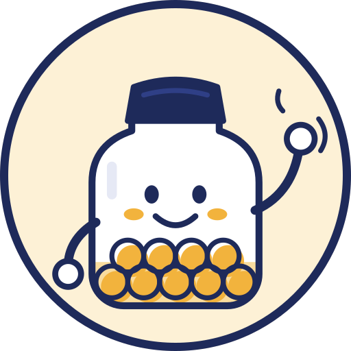
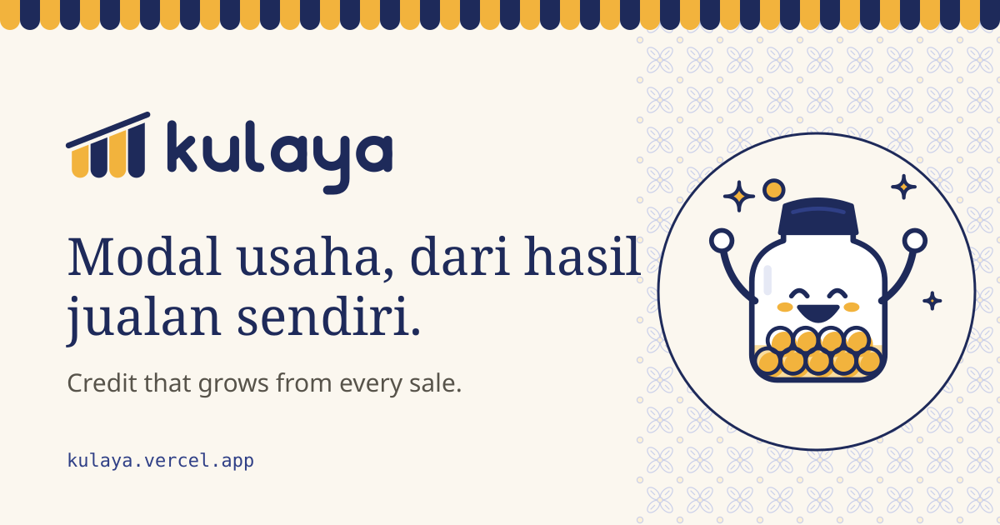

Logo: the rising awning
Four awning stripes hang from a roof line that rises to the right. The scalloped hems say warung; the stepping tops read as a sales chart going up.
Bars alternate kunyit and nila so the stripes read as fabric. In one colour, the gaps keep them legible down to 16 px.
The wordmark is drawn as a single 7-unit rounded stroke, lowercase, with a hand-finished tail on l and y.


OG / social image · 1200×630
Engineer rasterises og-image.svg to PNG at build time (fonts must be loaded). Awning edge on top, faint kawung field behind the mascot.
Don't
- Recolour bars outside nila / kunyit / kertas, or add gradients or shadows.
- Flatten the slope or equalise the bar heights.
- Set "kulaya" in a font; always use the drawn wordmark file.
- Put the full-colour mark on kunyit; use mono-dark there.
Slogan & rationale
Modal usaha, dari hasil jualan sendiri.
Credit that grows from every sale.
Kept the preferred line: it names the mechanism, has no pronoun, and makes no promise of speed.
 RATIONALE
RATIONALE
Kulaya should feel like the stall it serves: painted signage, a striped awning, a receipt you can hold. Nila, the batik dye, carries trust and every line of text. Kunyit, the warung kitchen colour, is saved for the mark, the money and the moment of good news. Bree Serif gives headlines and rupiah figures the warmth of a hand-painted price board, while Plus Jakarta Sans, drawn for Jakarta, keeps every sentence clear on a cracked screen in the sun.
Colour: Nila & Kunyit on Kertas
Changes from the starting values
Abu darkened to #57534A so secondary text reaches AAA (7.1:1) on kertas.
Daun, Bata, Aren each gain a -700 text shade. Aren-600 measured 4.2:1 as text, which fails AA; it stays for icons and fills only.
Sawo (sawo matang) is added for illustrated skin only. It never appears in UI.
Political check: the composition is kertas-dominant with nila text, so it never reads as a solid blue or yellow party field. No red-black or orange-black pairing exists in the system, and kunyit is never used for urgency.
Type
Bree Serif · 400
Display + money, both sites. A sturdy, friendly slab-serif with the feel of painted price boards. Full Latin with Indonesian diacritics; lining figures read well at 32–40 px.
Plus Jakarta Sans · 400 600 700 800
UI + body, both sites. Designed by Tokotype for Jakarta's city identity. Open apertures that hold up at large system text sizes.
JetBrains Mono · 400 600
Protocol site only: addresses, hashes, code, revert names. Distinct 0/O and 1/l.
Number rules
Rupiah always as Rp 1.250.000: space after Rp, dot for thousands, no decimals.
Headline figures ≥ Rp 1 juta may show the friendly form (Rp 1,25 juta, comma decimal) with the exact amount directly below.
Tables and nota rows use font-variant-numeric: tabular-nums, right-aligned.
Floor: 14 px for any text, anywhere. Owner body 18 px / 1.55, tested at 130% system size.
Icons · 43, drawn on a 24 grid
2 px round stroke in currentColor. Key icons carry a kunyit fill printed 1.2 px off-register, the same "misprint" used across all illustration. On the owner site every icon sits next to a word, except the back arrow.
Signature motifs
Celengan · batas modal & repayment
Five fill states. Coins are printed off-register like the icons.
 {{ j }}%
{{ j }}%
Asisten Kulaya: Si Toples
A glass coin jar wearing a peci. The coins inside are the shop's own sales, so the assistant literally carries what it talks about. It never holds a phone, a laptop or anything "AI".

Illustration style: ink line + misprinted fill
 Bu Sri · hijab, apron
Bu Sri · hijab, apron Mas Dimas · kaos, helper
Mas Dimas · kaos, helper- Real Indonesian objects: gerobak, etalase, sachets in a row, plastic stools, kerupuk jars, motor parked out front.
- Older owners, hijab and non-hijab, Javanese and non-Javanese settings.
- Flat palette fills, one ink colour, round caps and joins.
- Leave paper showing; let kertas be the light.
- Gradients, glows, 3D, glass, drop shadows inside art.
- Robots, brains, floating coins, sparkles as decoration (a drawn star is allowed only for celebration).
- Stock business people, laptops, suits, skyline backdrops.
- Bitmaps, traced kit art, emoji or Unicode glyphs as graphics.
{{ tokensCss }}